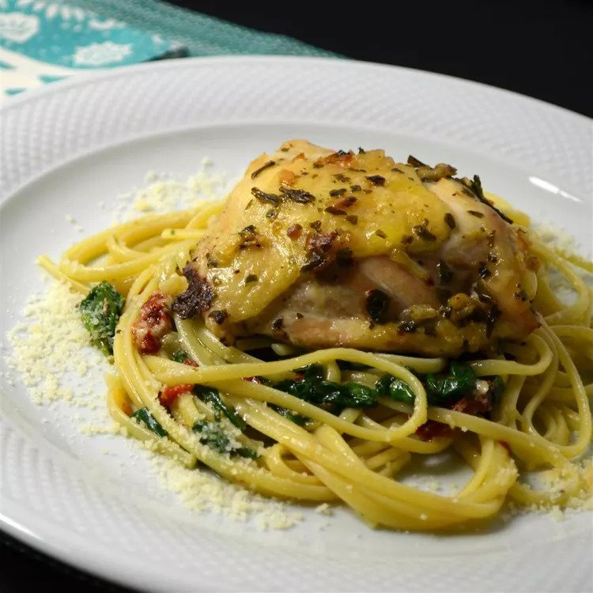

Oven Chicken and Spinach

Description
In this delicious dish, several chicken breasts are baked in a
rich spinach-onion-butter sauce and served with linguini.
Ingredients
- ½ cup butter
- 1 onion, chopped
- 2 tablespoons dried basil
- 1 tablespoon red pepper flakes
- 1 teaspoon salt
- 1 teaspoon ground black pepper
- 3 pounds chicken thighs
- 1 pound linguine pasta
- 2 (10 ounce) packages frozen chopped spinach, thawed and squeezed dry
- 1 cup grated Parmesan cheese
Steps
-
Preheat oven to 350 degrees F (175 degrees C).
-
Place butter into a 9x13-inch baking dish and set in oven while it
preheats until butter is melted, about 5 minutes.
-
Stir onion, basil, red pepper flakes, salt, and black pepper into
melted butter. Add chicken, turning to coat with onion mixture and
ending skin-side up.
-
Bake in the preheated oven until no longer pink at the bone and the
juices run clear, about 1 hour. An instant-read thermometer inserted
near the bone should read 165 degrees F (74 degrees C).
Remove chicken from dish.
-
Bring a large pot of lightly salted water to a boil. Cook linguine
at a boil until tender yet firm to the bite, about 11 minutes; drain.
-
Mix spinach into onion-butter sauce until thoroughly mixed; add linguine
and Parmesan cheese, tossing to combine. Place chicken on top of pasta.